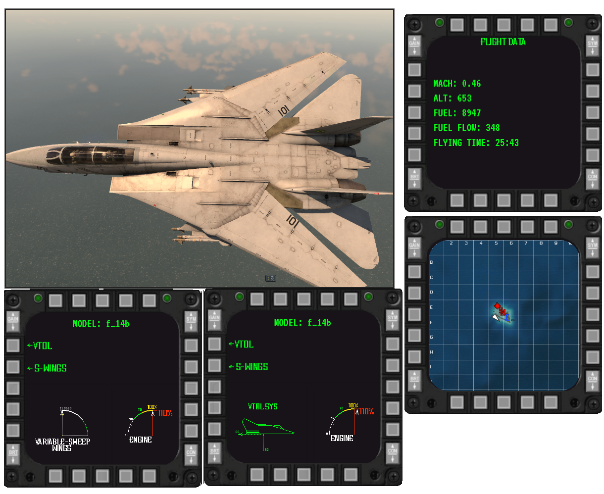
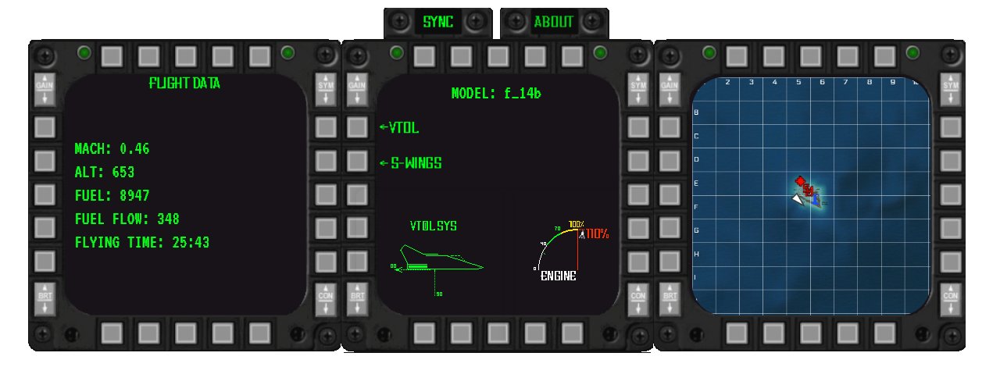

WT MFD (Multi Functional Display) is a Chrome extension that simulates a real MFD, providing important and useful information for flights in War Thunder. The extension displays data such as:
The extension works by collecting data from the localhost that War Thunder itself provides and transcribing it into a visual interface similar to an MFD.
To avoid lag or delays in information, the extension currently only collects data from indicators and map info. This means that the altitude will be according to the metric the aircraft uses. American or NATO aircraft use feet, but there are aircraft that use meters.
1.0.1
The first version features fuel gauges, fuel consumption per minute, Max flying time calculation, altitude and speed in Mach on MFD 1.
On MFD 2, there is an option to choose between an interactive variable wing geometry panel and a VTOL system.
MFD 3 displays the real-time map of the mission.
The last MFD shows a compass

About Future?
For the extension
First, my future plan is to make all MFDs interactive, adding additional functions that are truly useful for Air SB in War Thunder. I also intend to optimize the extension so that the 'sync' button is no longer necessary and to add customization options to the map.
For mobile?
I know a mobile version would be useful, and that's why, in the future, as soon as I implement everything I find interesting, I will work on an Android app. However, this will have to wait for a while since I don't know how to program in Java yet. "God help me"
And last

The reality is that I am not a programmer; I am learning HTML, CSS, and JavaScript now, during the process of this project. This project is a way for me to practice and learn in the process, so it is not for profit. However, you can help by making a donation if you wish.